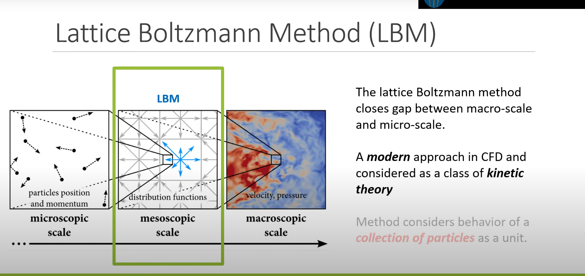

# 基于 LBM (Lattice Boltzmann Method) 流体模拟相对于基于解 N-S 方程的流体模拟方法，Lattice Boltzmann Method，简称 LBM，LBM 是另外一种截然不同的方法，这种方法和传统解 N-S 方程关系不同，传统方法是纯数值求解，通过逼近域来求解偏微分方程，但大多数求解都局限在二阶精度。LBM 方法避免了传统方法求解流体力学方程的复杂求解及低精度，但也能实现逼真的流体模拟动画，因为不同复杂求解 N-S 方程，所以速度上会快很多，在 3070s 显卡 1024 分辨率仅需 0.06ms，但缺点是显存占用比较多，因为要存 9 个函数，还有对于静止流体计算效率不高，不适用于强压缩性及，不适合在逼真粘度下直接模拟声音的远距离传播，优点就是 LBM 很容易实现，低噪声，出来的图像新闻上的热效应图，合适大型求解。
# LBM 方程LBM 方法本质上是一种基于拉格朗日视角的模拟方法，形式上却跟欧拉视角下的网格有点相似，它将微观粒子和宏观规律相结合，同时有着较好的精度，在游戏领域上一般都是结算不可压缩流体，所以可以很好的达到需求而且速度也快。
LBM 是先把流体空间分割为一个个平均的网格，但同时网格内又存在通过概率密度函数来描述微观尺度下的粒子分布情况

这种看似欧拉网格一样的划分，但还是有点不同，以二维为例，欧拉网格的邻居格子只有上下左右，但 LBM 的邻居是周围一圈 8 个格子，通常用 DdQq 来表示，d 表示维度，q 则表示格子数目，常用的有 D1Q3 、 D2Q9 、 D3Q15 、 D3Q19 和 D3Q27
每个格子都有个概率密度函数来描述粒子分布，这个函数就是 f（x,t），x 就是格子的位置，t 就是时间，每个格子有 9 个流动方向，一个速度方向有一个分布函数，所以每个格子有 9 个分布函数，
有了这些分布函数，就可以这样描述速度场和密度
\begin{align} \rho(x,t)&=\Sigma_i f_i(x,t)\\ u(x,t)&=\frac{1}{\rho(x,t)}\Sigma_i c_i f_i(x,t), \ \ i=0,...,8 \end{align} \tag {1}
其中 p（x，t）是虚拟粒子的密度，就是 9 个函数求和，u（x,t）就是速度，Ci 就是 9 个方向。
LBM 的核心分为碰撞和流动两步骤，这里碰撞就用 BGK 碰撞算子 Ωi (f), 这个算子经过 BGK 模型动力学演化过来的
Ω i ( f ) = − f i ( x , t ) − f i e q ( x , t ) τ f f i ( x , t + Δ t ) = f i ( x , t ) + Ω i ( f ) f i ( x , t + Δ t ) = f i ( x , t ) − f i ( x , t ) − f i e q ( x , t ) τ f (2) Ωi(f) = -\frac{f_i(x, t)-f_i^{eq}(x,t)} {\tau_f} \\f_i(x, t+\Delta t)=f_i(x, t) + Ωi(f)\\f_i(x, t+\Delta t)=f_i(x, t) -\frac{f_i(x, t)-f_i^{eq}(x,t)} {\tau_f} \tag {2} Ω i ( f ) = − τ f f i ( x , t ) − f i e q ( x , t ) f i ( x , t + Δ t ) = f i ( x , t ) + Ω i ( f ) f i ( x , t + Δ t ) = f i ( x , t ) − τ f f i ( x , t ) − f i e q ( x , t ) ( 2 )
其中 τf 是松弛时间，和粘度 Mu 有关系，而 Fqe 函数就是流场平衡分布函数
μ = c s 2 ( τ f − Δ t 2 ) f i e q ( x , t ) = ω i ρ ( x , t ) ( 1 + u ( x , t ) ⋅ c i c s 2 + ( u ( x , t ) ⋅ c i ) 2 2 c s 4 − u ( x , t ) ⋅ u ( x , t ) 2 c s 2 ) (3) \mu =c_s^2(\tau_f -\frac{\Delta t}2)\\f_i^{eq}(x,t)=\omega_i \rho(x,t)(1+\frac{u(x,t)\cdot c_i}{c_s^2}+\frac{(u(x,t)\cdot c_i)^2}{2c_s^4}-\frac{u(x,t)\cdot u(x,t)}{2c_s^2}) \tag {3} μ = c s 2 ( τ f − 2 Δ t ) f i e q ( x , t ) = ω i ρ ( x , t ) ( 1 + c s 2 u ( x , t ) ⋅ c i + 2 c s 4 ( u ( x , t ) ⋅ c i ) 2 − 2 c s 2 u ( x , t ) ⋅ u ( x , t ) ) ( 3 )
其中 C 就是声波在流体的传播速度，wi 为每个方向的权重，Cs = C / 根号 3，为了方便计算我们就设置格子的声速为 1。除 Cs 就是乘他的倒数，那化简后为
f i e q ( x , t ) = ω i ρ ( x , t ) ( 1 + 3 ∗ u ( x , t ) ⋅ c i + 4.5 ∗ ( u ( x , t ) ⋅ c i ) 2 − 1.5 ∗ u ( x , t ) ⋅ u ( x , t ) ) (4) f_i^{eq}(x,t)=\omega_i \rho(x,t)(1+3*{u(x,t)\cdot c_i}+4.5*{(u(x,t)\cdot c_i)^2}-1.5*{u(x,t)\cdot u(x,t)}) \tag {4} f i e q ( x , t ) = ω i ρ ( x , t ) ( 1 + 3 ∗ u ( x , t ) ⋅ c i + 4 . 5 ∗ ( u ( x , t ) ⋅ c i ) 2 − 1 . 5 ∗ u ( x , t ) ⋅ u ( x , t ) ) ( 4 )
・是 dot，不是乘。接下来看一下流动步骤的核心公式
f i ( x + c i Δ t , t + Δ t ) = f i ( x , t ) (5) f_i(x+c_i \Delta t, t+\Delta t) = f_i(x,t) \tag {5} f i ( x + c i Δ t , t + Δ t ) = f i ( x , t ) ( 5 )
这公式理解就非常简单了，就是相邻格子之间传播 F 函数
整理一下，那么每个格子只要解算 9 次这公式就可以了，然后把他们加起来就可以得到密度和速度了，是不是非常简单
f i ( x , t + Δ t ) = f i ( x − c i Δ t , t ) − Δ t τ f ( f i ( x − c i Δ t , t ) − f i e q ( x − c i Δ t , t ) ) (6) f_i(x, t+\Delta t)=f_i(x-c_i \Delta t,t)-\frac{\Delta t}{\tau_f}(f_i(x-c_i \Delta t,t)-f_i^{eq}(x-c_i \Delta t,t)) \tag {6} f i ( x , t + Δ t ) = f i ( x − c i Δ t , t ) − τ f Δ t ( f i ( x − c i Δ t , t ) − f i e q ( x − c i Δ t , t ) ) ( 6 )
然后整理下，提取下公因式就是
f i ( x , t + Δ t ) = （ 1 − Δ t τ f ） ∗ f i ( x − c i Δ t ） + Δ t τ f ∗ f i e q ( x − c i Δ t , t ) ) (6) f_i(x, t+\Delta t)=（1-\frac{\Delta t}{\tau_f}）*f_i(x-c_i \Delta t）+\frac{\Delta t}{\tau_f}*f_i^{eq}(x-c_i \Delta t,t)) \tag {6} f i ( x , t + Δ t ) = （ 1 − τ f Δ t ） ∗ f i ( x − c i Δ t ） + τ f Δ t ∗ f i e q ( x − c i Δ t , t ) ) ( 6 )
这样看是不是更简单了，就是说平衡函数和分布函数做个线性插值
# Niagara 实现说完公式了，就下来说说迭代步骤：
解算密度和速度场，第一帧的话密度等于 1，速度定于定值。 解算平衡函数 Feq 每个方向的 Feq 和当前 F 函数做 lerp，松弛系数为 alpha，然后这个值就是新的 F 存起来 直接上 Niagara，因为解算过于简单，直接放图和 Hlsl
首先是初始化
注意这里 Execute Behavior 要选 On Simulation Reset，才是第一执行
"" 1 2 3 4 5 6 7 8 9 10 11 12 13 14 15 16 17 18 19 20 21 22 23 24 25 26 27 28 29 30 31 32 33 34 35 36 **int ** XIndex;int ** YIndex;ExecutionIndexToGridIndex (XIndex, YIndex);0 ;float ** Dentisy **=** 1.f ;float ** Solid **=** 0.f ;if **(distance (float2 ((**float **)XIndex,(**float **)YIndex),CylinderPosition)**<**CylinderRadius)1.f ;SetValueAtIndex (XIndex, YIndex, DensityIndex, Dentisy);SetValueAtIndex (XIndex, YIndex, VelocityIndex, Velocity.x);SetValueAtIndex (XIndex, YIndex, VelocityIndex**+**1 , Velocity.y);*9 ] **=** {float2 (0 , 0 ), float2 (1 , 0 ), float2 (0 , 1 ), float2 (**-**1 , 0 ), float2 (0 , **-**1 ), float2 (1 , 1 ),float2 (**-**1 , 1 ), float2 (**-**1 , **-**1 ), float2 (1 , **-**1 )};float ** W[9 ] **=** {4.0 **** 9.0 , 1.0 **** 9.0 , 1.0 **** 36.0 ,1.0 **** 36.0 , 1.0 **
这里我们把周围虚拟格子 function 用 index 写入 grid2d，还有速度和密度
然后就是核心主要解算部分
"" 1 2 3 4 5 6 7 8 9 10 11 12 13 14 15 16 17 18 19 20 21 22 23 24 25 26 27 28 29 30 31 32 33 34 35 36 37 38 39 40 41 42 43 44 45 46 47 48 49 50 51 52 53 54 55 56 57 58 59 60 61 62 63 64 65 66 67 68 69 70 71 72 73 74 75 76 77 78 79 80 81 82 83 84 85 86 87 88 89 90 91 92 93 94 95 96 97 98 99 100 101 102 103 104 105 106 int XIndex;int YIndex;int MaxXCell;int MaxYCell;ExecutionIndexToGridIndex (XIndex, YIndex);GetNumCells (MaxXCell,MaxYCell);0 ;float Dentisy = 0.f ;9 ] = {float2 (0 , 0 ), float2 (1 , 0 ), float2 (0 , 1 ), float2 (-1 , 0 ), float2 (0 , -1 ), float2 (1 , 1 ),float2 (-1 , 1 ), float2 (-1 , -1 ), float2 (1 , -1 )};float W[9 ] = {4.0 / 9.0 , 1.0 / 9.0 , 1.0 / 9.0 , 1.0 / 9.0 , 1.0 / 9.0 , 1.0 / 36.0 ,1.0 / 36.0 , 1.0 / 36.0 , 1.0 / 36.0 };float Solid;float Alpha = Inv_tau;GetPreviousValueAtIndex (XIndex, YIndex, SolidIndex, Solid);SetValueAtIndex (XIndex, YIndex, SolidIndex, Solid);for (int index = 0 ;index<9 ;index++)int NewIndexX = XIndex+(Dir[index].x);int NewIndexY = YIndex+(Dir[index].y);if (NewIndexX>MaxXCell-1 )0 ;if (NewIndexY>MaxYCell-1 )0 ;if (NewIndexX<0 )1 ;if (NewIndexY<0 )1 ;float OtherBalance;GetPreviousValueAtIndex (NewIndexX, NewIndexY, index, OtherBalance);if (length (Velocity)>0.5 )0.5 /length (Velocity);if (XIndex==0 ||XIndex==MaxXCell-1 )1 ;1 ;if (Solid>0.5 )1 ;float2 (0.0 ,0.0 );1 ;for (int index = 0 ;index<9 ;index++)int NewIndexX = XIndex+(Dir[index].x);int NewIndexY = YIndex+(Dir[index].y);if (NewIndexX>MaxXCell-1 )0 ;if (NewIndexY>MaxYCell-1 )0 ;if (NewIndexX<0 )1 ;if (NewIndexY<0 )-1 ;float CurrentBalance;GetPreviousValueAtIndex (NewIndexX, NewIndexY, index, CurrentBalance);float eu = dot (Dir[index],Velocity);float Dotvel = dot (Velocity,Velocity);float balance = W[index]*Dentisy*(1.f +3.f *eu+4.5f *eu*eu-1.5f *Dotvel);lerp (CurrentBalance,balance,Alpha);SetValueAtIndex (XIndex, YIndex, index, CurrentBalance);SetValueAtIndex (XIndex, YIndex, DensityIndex, Dentisy);SetValueAtIndex (XIndex, YIndex, VelocityIndex, Velocity.x);SetValueAtIndex (XIndex, YIndex, VelocityIndex+1 , Velocity.y);
最后在输出到 RT 上，绑定到材质上，粒子这时候就可以渲染了
最后测试下来，只需要 0.22ms，比直接解 NS 公式要快 10 倍，但缺点是只能模拟简单的效果并没有 NS 那么精细，可能模拟河流这些还是非常好的